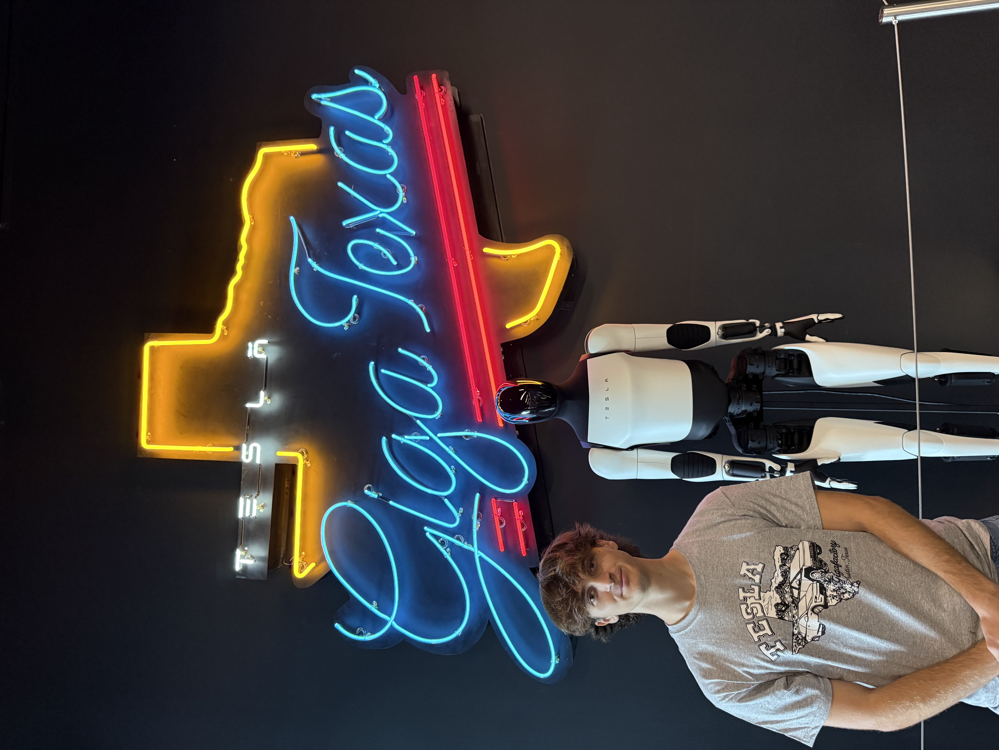
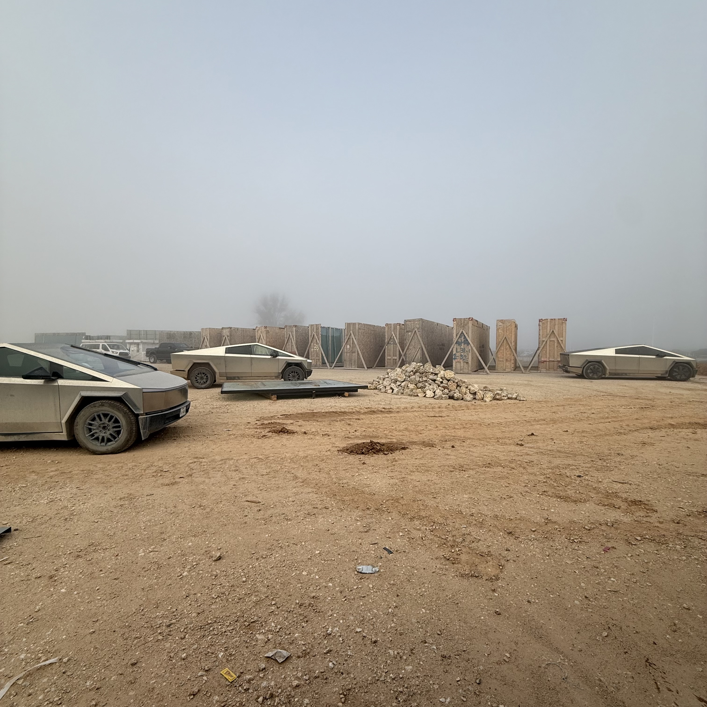
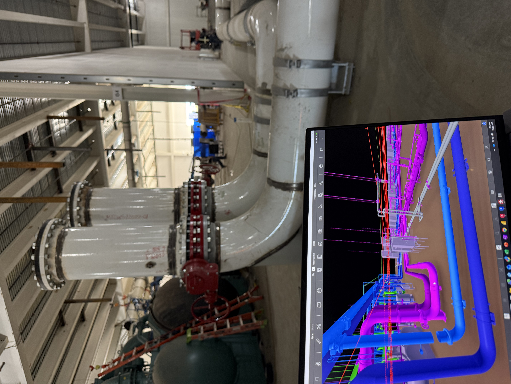
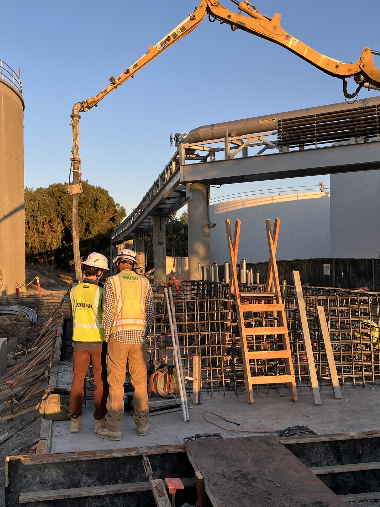
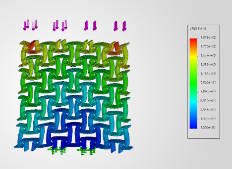

About Me

Hi! My name is Mason Jones and I am a mechanical engineer at UCLA pursuing both my Master's and Bachelor's degrees. My drive comes from solving complex, heavily-constrained physical puzzles—from optimizing thermal and fluid systems to designing large-scale mechanical construction infrastructure.
I've previously gained extensive industry experience across disciplines, recently working at Tesla where I tackled data center mechanical design and project management, as well as The Walsh Group where I optimized precision installations for commercial heavy-civil infrastructure. I've additionally co-founded my own sustainable engineering venture, SCW Landscaping.
Whether I'm analyzing chillers for cooling loops or tracking fluid regimes using high-speed videography, I love taking ideas from theoretical concepts to high-fidelity, real-world implementations using CAD (SolidWorks, Revit) and coding (MATLAB, Python). When I'm not in the lab, you can find me rooting for FC Barcelona, building PCs, weightlifting, or playing pickleball!
Experience


Mechanical Design Intern & PM Intern
Tesla
Sep 2025 - Nov 2025 | Austin, TXDuring my time at Tesla, I dove deep into the Cortex 1.0/2.0 systems by executing critical P&ID redlining using AutoCAD and Revit to ensure zero-defect integration with BIM modelers. On the hardware validation side, I took ownership of analyzing massive chilled water systems for data center cooling loops, heavily weighing long-term scalability and fatigue limits to select the ideal centralized CDU. To keep operations on schedule, I spearheaded data tracking by building automated Excel and Power BI dashboards from scratch to monitor over 70 complex work packages simultaneously, while ensuring rigorous site safety by managing LOTO procedures for critical busway infrastructure alongside fielding 50+ technical RFIs.

Project Engineer Intern
The Walsh Group
Jun 2024 - Aug 2024 | San Jose, CAActing as the eyes on the ground, I directed major lift station installations using high-precision surveying. My alignment checks directly optimized high-stakes, $10k/day crane operations. Ultimately, I crushed over 10 major design conflicts through relentless CAD analysis and RFI reviews, keeping the mechanical systems exactly on track and strictly up to rigorous QA/QC standards.
Co-Founder
SCW Landscaping
May 2021 - Sep 2021 | San Jose, CAI co-founded and built a rapidly scaling service retrofitting over 1,000 high-efficiency sprinkler units across more than 100 clients. By implementing smart, WiFi-enabled controllers, we were able to save an estimated 15,000 gallons of monthly water waste, revolutionizing our clients' utility costs through sheer operational efficiency.
Projects
Vortex Shedding & Flow Scaling
What: An extensive empirical study validating the Strouhal-Reynolds scaling laws for fluid-structure interactions across subcritical flow regimes.
How: Using a modular wind tunnel seeded with glycerin mist, I captured free-stream velocities and von Kármán vortex shedding frequencies via 240 fps videography. I developed comprehensive MATLAB algorithms employing Fast Fourier Transform (FFT) and Autocorrelation analysis to parse grayscale video stacks and accurately extract dominant shedding frequencies.
Why: By rigorously optimizing lighting configurations and narrowing measurement Regions of Interest, I achieved extremely high signal-to-noise spectral purity—confirming the universality of the Strouhal constant (St ≈ 0.17–0.19) and demonstrating Reynolds-dependent separation migration on an airfoil.
Cryogenic Heat Transfer & DAQ
What: A highly precise thermodynamic study characterizing the multi-regime boiling curves of a copper sphere quenched in liquid nitrogen.
How: Approached via the lumped capacitance method. I optimized the DAQ configuration (50 Hz, 16-bit) to capture rapid thermal transients without aliasing. To extract critical heat flux from noisy numerical derivatives (dT/dt), I utilized MATLAB Simulink and applied optimized Savitzky-Golay digital filtering to successfully suppress quantization noise while flawlessly preserving transient peaks.
Why: The empirical critical heat flux values demonstrated exceptional agreement with theoretical models (133.14 kW/m² vs 133.6 kW/m²). This tight statistical repeatability completely validated the robustness of the experimental mathematical model and DAQ calibration for cryogenic applications.

Auxetic Metamaterials & Optical Strain Mapping
What: A multi-phase mechanical characterization study of auxetic TPU lattice structures, focusing on the relationship between geometric lattice design and negative Poisson's ratio (ν ≈ −0.6).
How: I first calibrated the INSTRON loading apparatus using three reference springs to isolate a high-precision force range with minimal sensor drift. I then designed optimized anti-tetrachiral lattice geometries using SolidWorks FEA to achieve a target 20% axial compression. Finally, I developed custom MATLAB scripts for full-field optical strain mapping—tracking pixel-wise deformation across video frames, generating 12×12 strain distribution matrices, and rendering color-coded deformation heat maps.
Why: The resulting heat maps and strain matrices visually and quantitatively confirmed the auxetic inward-folding behavior under compression, with localized strain values ranging from 0.00 to 1.00 across the deformation field. These findings validated that structural pod geometry—not bulk material properties—dictates the global mechanical response of metamaterials.
Education
University of California,
Los Angeles (UCLA)
M.S. Mechanical Engineering
June 2027- Specialized in Thermal and Fluid Systems (Advanced Heat Transfer, CFD, and Energy Systems).
B.S. Mechanical Engineering
June 2026- GPA: 3.635/4.0 | Dean's List (2x) | True Bruin Distinguished Senior Award
- Technical Breadth: Electrical Engineering